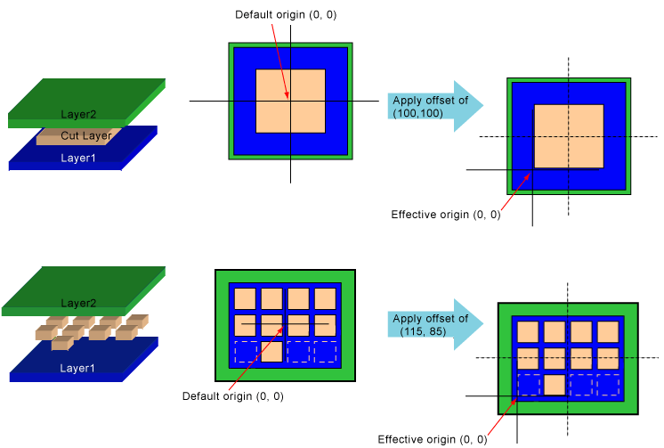

|
 |
 |
||||||
|
|
|
||||||
The origin of a via is the (0,0) point in the coordinates for the shapes in the via. The setOriginOffset function specifies an offset that is added to all shapes in the via.
When a via instance is created by an oaVia, the oaVia specifies the coordinates for positioning the via within the block. The origin of the via is placed exactly at the via coordinates.
Use the getOriginOffset function to return the origin offset value.
The origin is placed at the center (0,0) location of the cut layer. The same is true for cuts with multiple rows or columns.
An offset of (-100,-100) might be used for technologies whose via cut shapes are defined with a lower-left origin rather than a center origin. This offset moves every shape down and to the left.

Return to Programmers Guide topics

Copyright © 2001-2010 Cadence Design Systems, Inc.
All rights reserved.